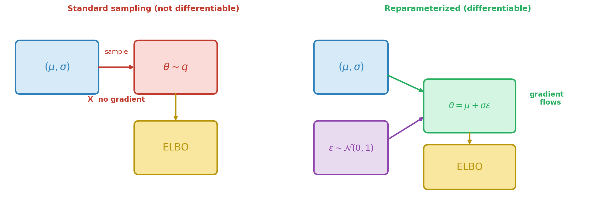
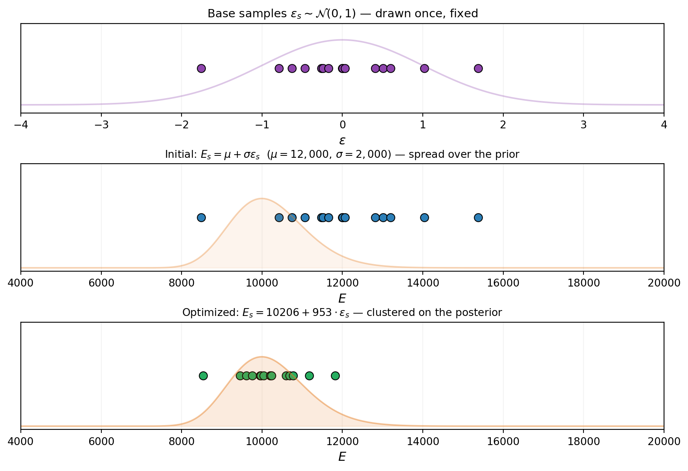
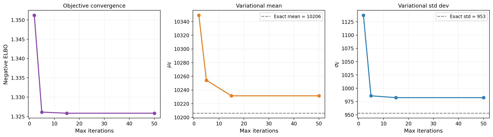
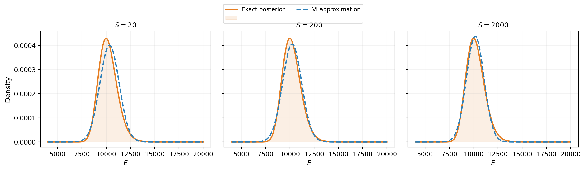
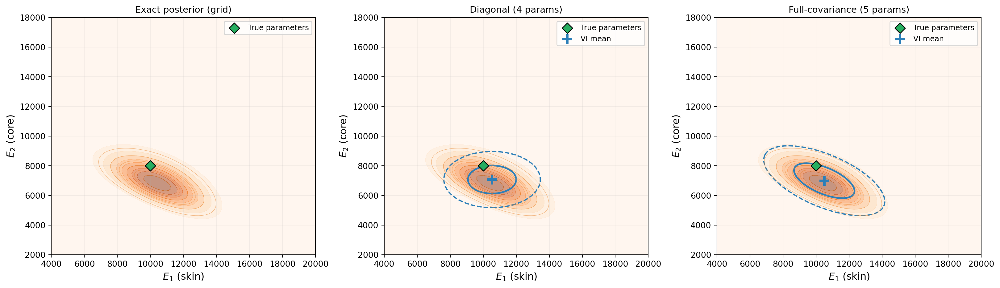

Optimizing the ELBO
PyApprox Tutorial Library
The reparameterization trick, convergence monitoring, and applying VI to higher-dimensional problems.
TipDownload Notebook
Learning Objectives
After completing this tutorial, you will be able to:
- Explain the gradient problem: why naively differentiating through a sampling expectation fails
- Describe the reparameterization trick and how it makes the ELBO differentiable
- Trace how fixed base samples are transformed into variational samples during optimization
- Monitor ELBO convergence during optimization and interpret the convergence curve
- Assess the effect of the number of base samples on optimization stability
- Apply VI to a 2D inference problem and identify the limitations of a diagonal Gaussian
Prerequisites
Complete What Variational Inference Optimizes before this tutorial.
The Gradient Problem
The previous tutorial showed that VI maximizes the ELBO:
\[ \text{ELBO}(\mu, \sigma) = \mathbb{E}_{q(\theta;\, \mu, \sigma)}\!\big[\log \mathcal{L}(\theta)\big] - \mathrm{KL}(q \| p) \]
The KL term between two Gaussians has a closed-form expression, so its gradient with respect to \((\mu, \sigma)\) is straightforward. The difficulty is the expected log-likelihood: we approximate it by drawing samples \(\theta^{(s)} \sim q(\cdot;\, \mu, \sigma)\), but the distribution we sample from itself depends on the parameters. Sampling is not a differentiable operation — we cannot backpropagate through a random number generator. Figure 1 illustrates the problem and the solution.
The Reparameterization Trick
The solution separates the randomness from the parameters. Instead of sampling \(\theta\) from \(q(\cdot;\, \mu, \sigma)\), we write:
\[ \theta = \mu + \sigma \cdot \varepsilon, \qquad \varepsilon \sim \mathcal{N}(0, 1) \]
The randomness now lives in \(\varepsilon\), which does not depend on \((\mu, \sigma)\). We draw a fixed set of base samples \(\{\varepsilon^{(s)}\}_{s=1}^{S}\) once, and the transformed samples \(\theta^{(s)} = \mu + \sigma \varepsilon^{(s)}\) are differentiable functions of the parameters.
NoteThe trick is not limited to Gaussians
The Gaussian shift-and-scale \(\theta = \mu + \sigma \varepsilon\) is the simplest example, but the reparameterization trick works for any distribution whose samples can be written as a differentiable transformation of parameter-free noise. For example, a Beta variational distribution can be reparameterized via its inverse CDF applied to uniform base samples \(u \sim \text{Uniform}(0,1)\). The Choosing the Variational Family tutorial uses this to fit Beta posteriors for bounded parameters. The key requirement is: the transformation from base samples to variational samples must be differentiable with respect to the variational parameters.
Figure 2 makes this tangible for the Gaussian case. The base samples (top) are fixed throughout optimization. Changing \((\mu, \sigma)\) deterministically shifts and stretches the transformed points — the optimizer adjusts these knobs until the points cluster in the posterior’s high-density region.

In PyApprox, ConditionalGaussian.reparameterize(x, base_samples) implements this transformation: the base_samples are the fixed \(\varepsilon\) draws, and the output is \(\theta = \mu(x) + \sigma(x) \cdot \varepsilon\).
Setup: The Beam Problem
We use the same analytical beam as the previous tutorials, working in standardized space \(z = (E - \mu_{\text{prior}}) / \sigma_{\text{prior}}\) so the prior is \(\mathcal{N}(0, 1)\) and all variational parameters are order-1.
Watching the ELBO Converge
With the reparameterization trick in hand, the optimizer can compute gradients and descend the ELBO surface. Figure 3 tracks the negative ELBO and the variational parameters across iterations. Most of the progress happens in the first 50 steps.
# Track convergence by running with increasing iteration budgets
nsamples = 200
maxiters = [2, 5, 15, 50]
neg_elbos = []
means_E = []
stdevs_E = []
for mi in maxiters:
vd, cd, vp, llf, bs, wt = make_vi_components(bkd, nsamples)
elbo_i = make_single_problem_elbo(vd, llf, vp, bs, wt, bkd)
opt = ScipyTrustConstrOptimizer(maxiter=mi, gtol=1e-8, verbosity=0)
fitter = VariationalFitter(bkd, optimizer=opt)
result = fitter.fit(elbo_i)
neg_elbos.append(result.neg_elbo())
dummy_x = bkd.zeros((cd.nvars(), 1))
z_mu = float(cd._mean_func(dummy_x)[0, 0])
z_sig = math.exp(float(cd._log_stdev_func(dummy_x)[0, 0]))
# Transform back to physical E space
means_E.append(mu_prior + sigma_prior * z_mu)
stdevs_E.append(sigma_prior * z_sig)
TipMonitoring convergence in practice
The negative ELBO is the primary diagnostic for VI. A plateau means the optimizer has found a (local) minimum. Unlike MCMC, where you need trace plots, effective sample size, and \(\hat{R}\) to assess convergence, VI has a single number to watch. But remember: a converged ELBO only means VI found the best member of the variational family — if the family is too restrictive, the result may still be a poor approximation.
How Many Base Samples?
The ELBO expectation is approximated by a sum over \(S\) base samples. More samples give a lower-variance estimate, which means smoother gradients and more stable optimization — but at higher cost per iteration. Figure 4 shows the tradeoff: with too few samples the noisy gradient corrupts the optimization, but the returns diminish quickly.

TipQuadrature instead of Monte Carlo
For low-dimensional base distributions, Gauss-Hermite quadrature can replace random Monte Carlo sampling. Quadrature gives exact integration for polynomials up to a certain degree, dramatically reducing the number of points needed. For the 1D problems in this tutorial, as few as 15–20 quadrature points suffice.
Extending to Two Dimensions
We now apply VI to a composite beam with two uncertain moduli: \(E_1\) (skin) and \(E_2\) (core). The effective stiffness is a weighted average of the two:
\[ E_{\text{eff}} = \frac{A_{\text{skin}}\, E_1 + A_{\text{core}}\, E_2}{A_{\text{skin}} + A_{\text{core}}} \]
Because only the combination \(E_{\text{eff}}\) determines the tip deflection, observing the deflection creates a correlation between \(E_1\) and \(E_2\) in the posterior: if \(E_1\) is large, \(E_2\) must be smaller to explain the same observation, and vice versa.
With a diagonal (mean-field) Gaussian variational family, VI optimizes four parameters: \((\mu_1, \log\sigma_1, \mu_2, \log\sigma_2)\). The reparameterization trick applies independently to each dimension: \(z_i = \mu_{z,i} + \sigma_{z,i} \varepsilon_i\).
from pyapprox.benchmarks.functions.algebraic.cantilever_beam import (
CantileverBeam1DAnalytical,
)
# Composite beam: (E1_skin, E2_core) -> [tip_deflection, ...]
composite_beam = CantileverBeam1DAnalytical(
length=L, height=H, skin_thickness=5.0, q0=q0, bkd=bkd,
)
tip_model_2d = FunctionFromCallable(
nqoi=1, nvars=2,
fun=lambda E: composite_beam(E)[0:1, :],
bkd=bkd,
)
# Independent Gaussian priors on E1 and E2
mu_prior_2d = np.array([12_000.0, 10_000.0])
sigma_prior_2d = np.array([2_000.0, 2_000.0])
prior_2d = IndependentJoint(
[GaussianMarginal(mean=mu_prior_2d[i], stdev=sigma_prior_2d[i], bkd=bkd)
for i in range(2)],
bkd,
)
# Standardized composite model: z -> tip_deflection
std_tip_model_2d = FunctionFromCallable(
nqoi=1, nvars=2,
fun=lambda z: tip_model_2d(
bkd.asarray(mu_prior_2d[:, None]) + bkd.asarray(sigma_prior_2d[:, None]) * z
),
bkd=bkd,
)
# True parameters and observation
E1_true, E2_true = 10_000.0, 8_000.0
E_true_2d = bkd.asarray([[E1_true], [E2_true]])
sigma_noise_2d = 0.4
noise_lik_2d = DiagonalGaussianLogLikelihood(
bkd.asarray([sigma_noise_2d**2]), bkd,
)
model_lik_2d = ModelBasedLogLikelihood(tip_model_2d, noise_lik_2d, bkd)
np.random.seed(7)
y_obs_2d = float(model_lik_2d.rvs(E_true_2d)[0, 0])
noise_lik_2d.set_observations(bkd.asarray([[y_obs_2d]]))
print(f"True parameters: E1 = {E1_true:.0f}, E2 = {E2_true:.0f}")
print(f"Observed tip deflection: {y_obs_2d:.6f}")True parameters: E1 = 10000, E2 = 8000
Observed tip deflection: 5.377065# Build 2D diagonal Gaussian VI (in standardized space)
conds_2d = []
for _ in range(2):
mf = _make_degree0_expansion(bkd, 0.0)
lsf = _make_degree0_expansion(bkd, 0.0)
conds_2d.append(ConditionalGaussian(mf, lsf, bkd))
var_dist_2d = ConditionalIndependentJoint(conds_2d, bkd)
vi_prior_2d = IndependentJoint(
[GaussianMarginal(0.0, 1.0, bkd) for _ in range(2)], bkd,
)
# Log-likelihood in standardized space
base_lik_2d = DiagonalGaussianLogLikelihood(
bkd.asarray([sigma_noise_2d**2]), bkd,
)
multi_lik_2d = MultiExperimentLogLikelihood(
base_lik_2d, bkd.asarray([[y_obs_2d]]), bkd,
)
def log_lik_2d(z):
return multi_lik_2d.logpdf(std_tip_model_2d(z))
# 2D base samples
nsamples_2d = 300
np.random.seed(42)
base_samples_2d = bkd.asarray(np.random.normal(0, 1, (2, nsamples_2d)))
weights_2d = bkd.full((1, nsamples_2d), 1.0 / nsamples_2d)
elbo_2d = make_single_problem_elbo(
var_dist_2d, log_lik_2d, vi_prior_2d,
base_samples_2d, weights_2d, bkd,
)
# Optimize
opt_2d = ScipyTrustConstrOptimizer(maxiter=100, gtol=1e-8, verbosity=0)
fitter_2d = VariationalFitter(bkd, optimizer=opt_2d)
result_2d = fitter_2d.fit(elbo_2d)
# Extract fitted parameters and transform to physical space
vi_means_2d = []
vi_stdevs_2d = []
for ii, cd in enumerate(conds_2d):
dummy = bkd.zeros((cd.nvars(), 1))
z_mu = float(cd._mean_func(dummy)[0, 0])
z_sig = math.exp(float(cd._log_stdev_func(dummy)[0, 0]))
vi_means_2d.append(mu_prior_2d[ii] + sigma_prior_2d[ii] * z_mu)
vi_stdevs_2d.append(sigma_prior_2d[ii] * z_sig)
print(f"VI posterior (diagonal Gaussian):")
print(f" E1 ~ N({vi_means_2d[0]:.0f}, {vi_stdevs_2d[0]:.0f}^2)")
print(f" E2 ~ N({vi_means_2d[1]:.0f}, {vi_stdevs_2d[1]:.0f}^2)")
print(f"Negative ELBO: {result_2d.neg_elbo():.4f}")VI posterior (diagonal Gaussian):
E1 ~ N(10536, 1461^2)
E2 ~ N(7073, 947^2)
Negative ELBO: 2.9044We can also fit a full-covariance Gaussian that captures correlations. Instead of independent per-dimension parameters, we parameterize the covariance via its Cholesky factor \(L\) so that \(\Sigma = LL^\top\) is guaranteed positive-definite. The reparameterization becomes \(\theta = \mu + L\varepsilon\), and the optimizer learns both \(\mu\) and the entries of \(L\).
from pyapprox.probability.conditional.multivariate_gaussian import (
ConditionalDenseCholGaussian,
)
from pyapprox.probability.gaussian.dense import (
DenseCholeskyMultivariateGaussian,
)
from pyapprox.surrogates.affine.expansions.pce import (
create_pce_from_marginals,
)
def _make_expansion_nd(bkd, nvars_in, degree, nqoi, coeff=0.0):
"""Create a BasisExpansion with given degree, input dim, and nqoi."""
marginals = [UniformMarginal(-1.0, 1.0, bkd) for _ in range(nvars_in)]
exp = create_pce_from_marginals(marginals, degree, bkd, nqoi=nqoi)
nterms = exp.nterms()
coeffs = np.zeros((nterms, nqoi))
coeffs[0, :] = coeff
exp.set_coefficients(bkd.asarray(coeffs))
return exp
def build_dense_chol_gaussian(bkd, d, nvars_in=1, degree=0):
"""Build a full-covariance Gaussian via Cholesky parameterization."""
mean_func = _make_expansion_nd(bkd, nvars_in, degree, nqoi=d)
log_chol_diag_func = _make_expansion_nd(bkd, nvars_in, degree, nqoi=d)
n_offdiag = d * (d - 1) // 2
chol_offdiag_func = None
if d > 1:
chol_offdiag_func = _make_expansion_nd(
bkd, nvars_in, degree, nqoi=n_offdiag,
)
return ConditionalDenseCholGaussian(
mean_func, log_chol_diag_func, chol_offdiag_func, bkd,
)
# Full-covariance Gaussian VI (in standardized space)
var_dist_full = build_dense_chol_gaussian(bkd, d=2)
prior_full = DenseCholeskyMultivariateGaussian(
bkd.zeros((2, 1)), bkd.eye(2), bkd,
)
elbo_full = make_single_problem_elbo(
var_dist_full, log_lik_2d, prior_full,
base_samples_2d, weights_2d, bkd,
)
fitter_full = VariationalFitter(bkd, optimizer=opt_2d)
result_full = fitter_full.fit(elbo_full)
print(f"Diagonal Gaussian: {elbo_2d.nvars()} params, "
f"neg ELBO = {result_2d.neg_elbo():.4f}")
print(f"Full-covariance Gaussian: {elbo_full.nvars()} params, "
f"neg ELBO = {result_full.neg_elbo():.4f}")Diagonal Gaussian: 4 params, neg ELBO = 2.9044
Full-covariance Gaussian: 5 params, neg ELBO = 2.6823Figure 5 compares both variational families to the exact 2D posterior. The diagonal Gaussian has axis-aligned ellipses; the full-covariance Gaussian tilts to match the posterior’s correlation structure.

The diagonal Gaussian assumes independence — its axis-aligned ellipses cannot represent the posterior’s tilt. The full-covariance Gaussian captures the correlation at the cost of one extra parameter (\(d(d+1)/2 = 3\) Cholesky entries instead of \(d = 2\) diagonal entries). For \(d = 2\) the difference is small, but for larger problems the parameter count grows quadratically. The next tutorial explores this tradeoff systematically, along with low-rank and non-Gaussian variational families.
What We Defer
This tutorial showed how VI optimizes the ELBO in practice — from the reparameterization trick to convergence monitoring to the 2D composite beam. We saw that a full-covariance Gaussian captures correlations that a diagonal Gaussian misses. The next tutorial goes further: low-rank covariance parameterizations that scale to high dimensions, and non-Gaussian families (e.g., Beta) for bounded parameters.
Key Takeaways
- The reparameterization trick separates randomness (\(\varepsilon\)) from parameters (\(\mu, \sigma\)), making the ELBO differentiable: \(\theta = \mu + \sigma \varepsilon\)
- In PyApprox,
ConditionalGaussian.reparameterizeimplements this transformation - The negative ELBO is the primary convergence diagnostic: a plateau means the optimizer has found the best member of the variational family
- More base samples reduce Monte Carlo noise in the ELBO gradient, stabilizing optimization; quadrature is even better for low-dimensional problems
- A diagonal Gaussian captures marginal means and variances but misses correlations — the next tutorial addresses this with richer families
Exercises
Replace the Monte Carlo base samples with Gauss-Hermite quadrature points. Compare the negative ELBO at convergence to the Monte Carlo result with 1,000 samples. Which gives a better (lower) negative ELBO?
In the 2D composite beam example, double the noise standard deviation. How does the posterior correlation change? Does the gap between the diagonal Gaussian and the exact posterior shrink or grow?
Run the 2D VI problem 10 times with different random seeds for the base samples. How much does the fitted mean vary across runs? How much does the negative ELBO vary?
(Challenge) Implement a simple gradient descent loop manually: start with \(\mu = 0, \log\sigma = 0\), compute the ELBO and its gradient at each step using
elbo()andelbo.jacobian()(requires a torch backend), and update with a fixed step size. Plot the ELBO trajectory and compare to theVariationalFitterresult.
Next Steps
Continue with:
- Choosing the Variational Family — From diagonal to full-covariance and non-Gaussian approximations